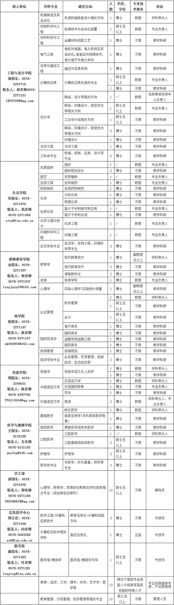
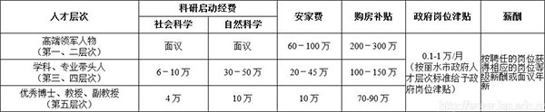

人才招聘
 返回
返回
返回
丽水学院2015年人才招聘计划
2015-3-12
丽水学院2015年人才招聘计划表
 注：1.根据丽水市人保局事业单位人员招聘有关规定，辅导员、管理人员和专业实践指导专家、产业教授岗位实行集中招聘，具体招聘时间、方式另行公告。2.专业技术职务不限的岗位，其相应的学历、学位均要求双证且全日制毕业。
一、人才的层次及条件：
学校所引进招聘的人才应具有良好的思想素质和一定的学术造诣，能胜任聘任岗位工作，有较强协作能力，身体健康。一般分五个层次： 第一层次：两院院士、著名学者。
第二层次：国家“百千万人才工程”国家级入选者、国家“千人计划”入选者、国家有突出贡献的中青年专家、国家杰出青年科学基金获得者、国家重点学科、重点实验室的首席科学家、长江学者特聘教授及具有同等水平的学者。
第三层次：省级特级专家、钱江学者特聘教授、浙江省“151人才工程”第一层次人员、浙江省“千人计划”人选、教育部“高校青年教师奖”获得者、教育部“新世纪优秀人才计划”入选者、国家教学名师、省级科学技术重点贡献奖获得者。
第四层次：享受国务院特殊津贴人员、省级有突出贡献中青年专家、浙江省“151人才工程”第二层次人员、省级教学名师、省部级重点学科（专业）带头人、省部级重点实验室负责人及具有同等水平的学者、在本学科领域造诣较深、省内领先且具有博士学位的教授、有突出教学成果的教授及其他具有高质量成果、高级别奖项的优秀人才，年龄一般在50周岁以下。
第五层次：学科、专业建设急需，业绩突出且具有博士学位的副教授，年龄一般在45周岁以下；具有硕士及以上学位的教授，年龄一般在50周岁以下；优秀博士，年龄一般在40周岁以下。 海外专家和留学归国人员的条件参照以上标准及学习、工作经历等具体情况确定。海外留学归国优秀博士年龄可放宽至45周岁。
二、人才待遇：
 注：1.享受学校提供的一系列培养、激励人才发展的奖励政策。
2.具体人才层次的确定由学校根据相关规定审查认定。
三、招聘程序：
（一）报名时间：2015年1月-2015年12月底（集中招聘的另见公告）。
（二）报名形式：应聘人员将个人简历通过电子邮件或信函方式寄到丽水学院人事处，并注明应聘的岗位。
（三）面试和资格审查：
1.对应聘人员的资格条件进行审查：参加面试的应聘人员需提供本人身份证、学历学位证书、职称证书、学术成果等材料的原件和复印件；应届毕业生还需提供学校盖章的就业推荐表。
2.对应聘人员的专业能力进行测试：按专业成立面试专家组，专家组由人事处、教务处、教学督导组、招聘学院领导和各学科专家组成。专家组根据报名人的年龄、学历（学位）、专业、学习成绩、科研水平、实践经历、工作业绩等综合情况按符合条件确定面试或试讲人员，主要面试相关专业知识及教师基本功，面试成绩满分100分，合格分数线60分。
（四）体检、考察：根据面试或试讲成绩按招聘计划1：1的比例从高分到低分确定体检、考察对象。体检参照《浙江省公务员录用体检通用标准（试行）》（修订后）并按有关操作规程执行。报考人员不按规定时间、地点参加体检的，视作放弃体检。考察工作参照《浙江省公务员录用考察细则（试行）》执行。体检、考察有放弃或不合格的，在该岗位（专业）面试合格人员中按总成绩从高分到低分依次递补。
（五）公示、聘用：体检、考察后，根据体检、考察情况确定拟聘用人员，拟聘用人员在指定网站向社会公示7个工作日。公示期满，没有反映或反映问题不影响聘用的，按有关人事聘用规定办理相关手续。
（六）上报丽水市人力资源和社会保障局新增人员审核表。
（七）试用期后签订聘用合同、办理聘用手续。
（八）纪律：应聘人员应对提交的本人信息和材料的真实性负责，凡提供虚假信息和材料通过资格审查的，一经查实，取消面试资格或聘用资格。
四、信息获取及联系方式：
（一）学校网址：http://www.lsu.edu.cn ；通讯地址：浙江省丽水市学院路1号；邮编：323000
（二）联系人：人事处李老师，联系电话：0578-2276220；E-mail：lsxyrsc@126.com。
丽水学院
2015年3月12日